Домофоны: продажа, монтаж и ремонтДомофондар: сату, орнату және жөндеуIntercoms: sales, installation and repair
Продаём, устанавливаем и ремонтируем аудио- и видеодомофоны KOCOM, работаем также с Commax, Vizit, HiWatch, Hikvision и Competition. Устанавливаем электрозамки, кодовые панели и системы контроля доступа. По запросу добавляем открытие со смартфона через Bluetooth-модуль ZMK.KOCOM аудио- және бейнедомофондарын сатамыз, орнатамыз және жөндейміз, Commax, Vizit, HiWatch, Hikvision және Competition домофондарымен де жұмыс істейміз. Электр құлыптарды, кодтық панельдерді және кіруді бақылау жүйелерін орнатамыз. Сұраныс бойынша ZMK Bluetooth-модулі арқылы смартфоннан ашуды қосамыз.We sell, install and repair KOCOM audio and video intercoms and also work with Commax, Vizit, HiWatch, Hikvision and Competition. We fit electric locks, keypads and access control systems and, on request, add smartphone opening with the ZMK Bluetooth module.
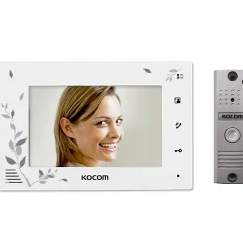
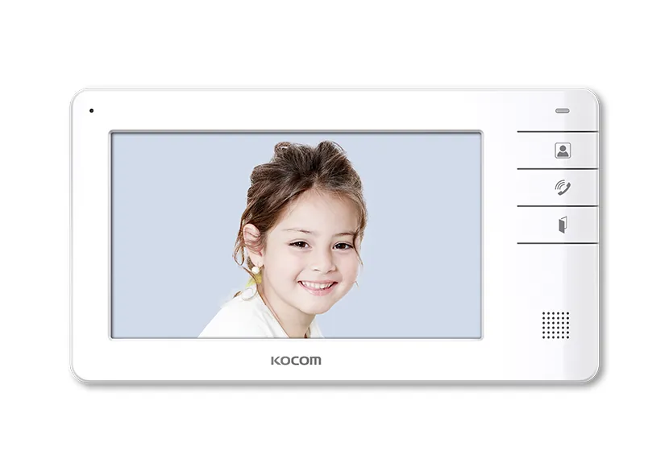
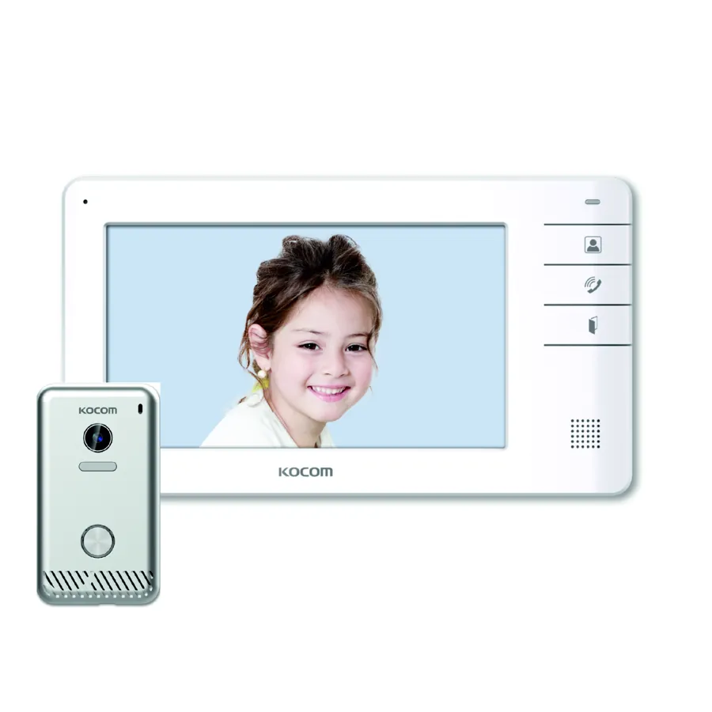
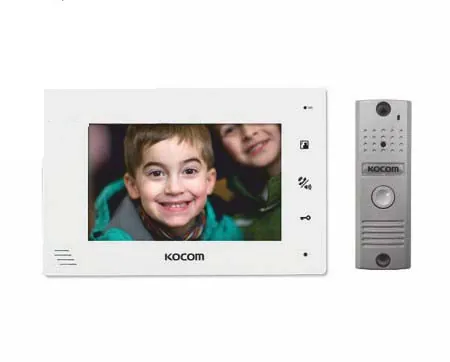
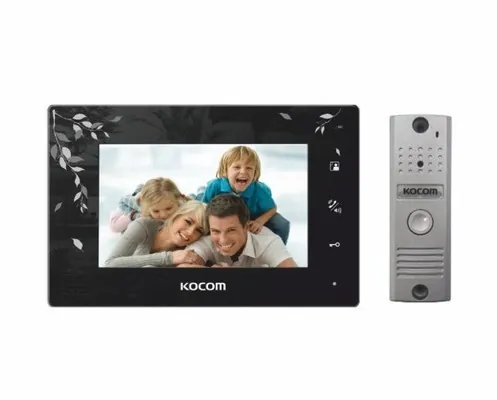
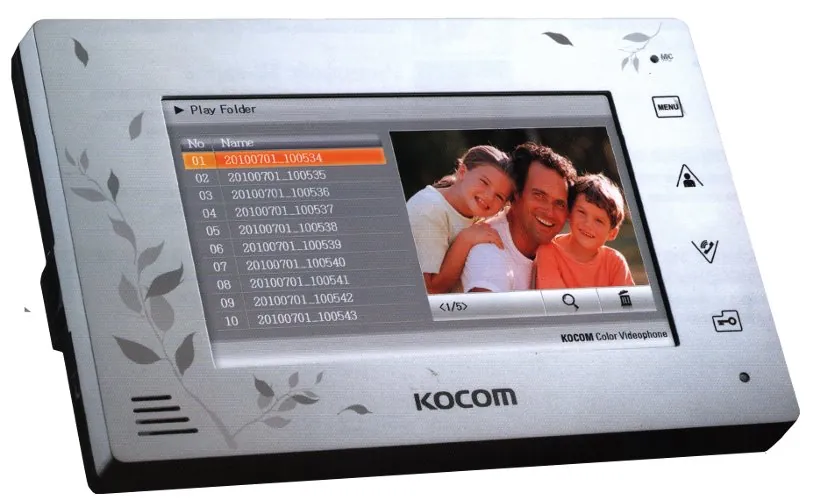
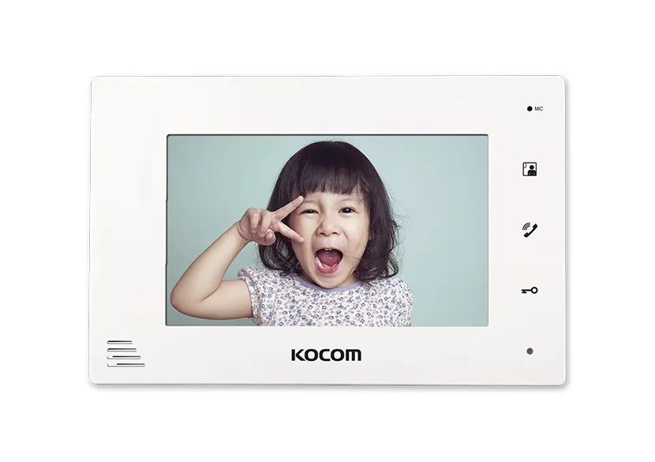
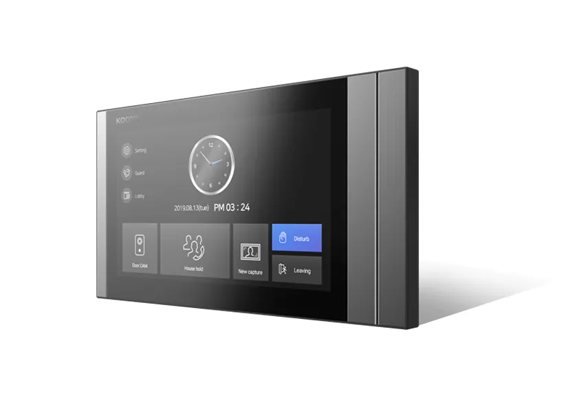
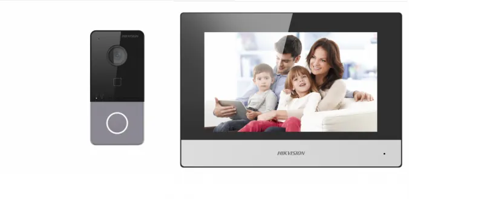
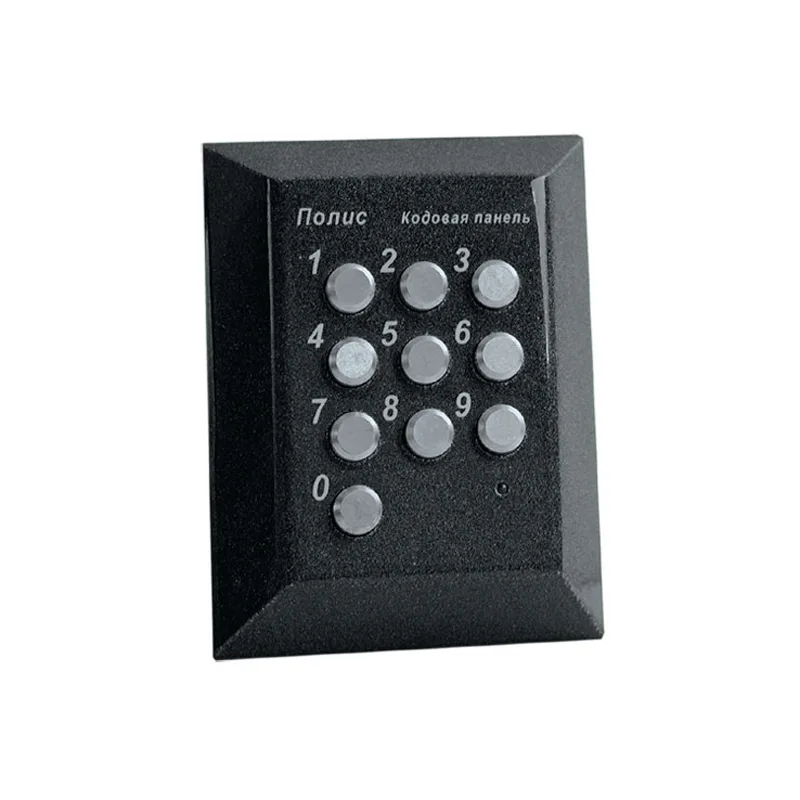
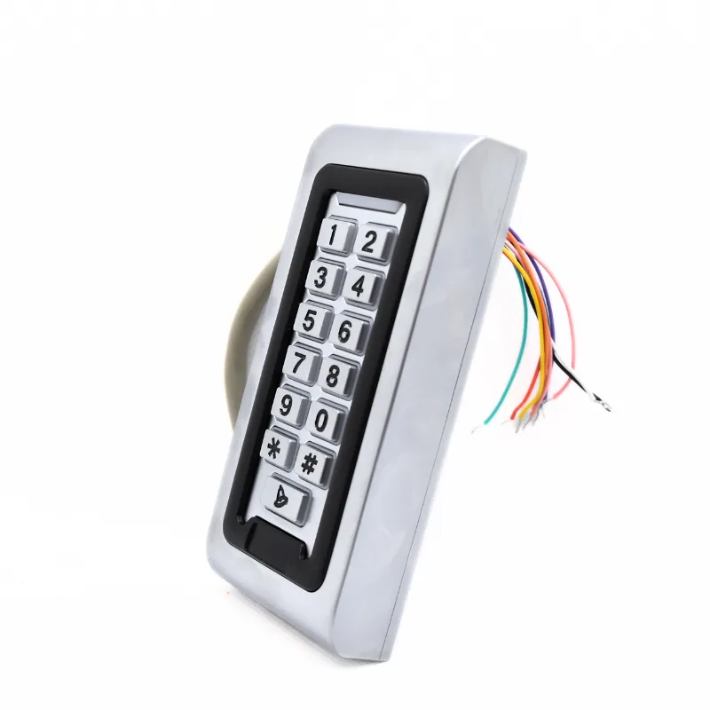
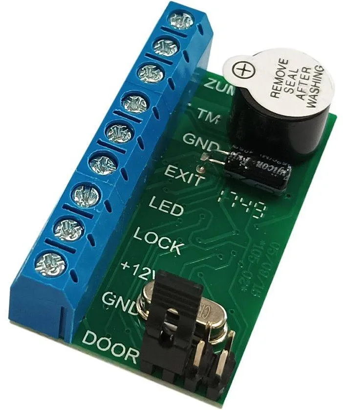
Работы и услугиЖұмыстар мен қызметтерWorks and services
МонтажОрнатуInstallation
Аудио- и видеодомофоны для частных домов, подъездов, калиток и ворот.Жеке үйлерге, кіреберістерге, қақпашалар мен қақпаларға аудио- және бейнедомофондар.Audio and video intercoms for houses, entrances, wickets and gates.
РемонтЖөндеуRepair
Устранение неисправностей: нет звука или изображения, не открывается замок, не работает вызывная панель.Ақауларды жою: дыбыс не бейне жоқ, құлып ашылмайды, шақыру панелі жұмыс істемейді.Fault repair: no sound or picture, the lock does not open, the call panel is dead.
ОбслуживаниеҚызмет көрсетуMaintenance
Проверка вызывной панели, мониторов, блока питания и электрозамка.Шақыру панелін, мониторларды, қуат блогын және электр құлпын тексеру.Checks of the call panel, monitors, power supply and lock.
ВидеодомофоныБейнедомофондарVideo intercoms
Монитор в помещении и вызывная панель с видеокамерой у входа.Үй ішіндегі монитор және кіреберістегі бейнекамерасы бар шақыру панелі.An indoor monitor and a call panel with a camera at the entrance.
ЭлектрозамкиЭлектр құлыптарElectric locks
Подбор и установка электрозамка на калитку или дверь, кнопка выхода.Қақпаша немесе есікке электр құлпын таңдау және орнату, шығу түймесі.Choosing and fitting electric locks for wickets and doors, exit button.
Открытие со смартфонаСмартфоннан ашуSmartphone opening
Bluetooth-модуль ZMK открывает калитку и дверь из приложения без интернета.ZMK Bluetooth-модулі қақпаша мен есікті қосымшадан интернетсіз ашады.The ZMK Bluetooth module opens wickets and doors from the app, no internet.
СКУД и кодовые панелиКіруді бақылау және кодтық панельдерAccess control and keypads
Системы контроля доступа для подъездов, офисов и ЖК: кодонаборные панели, электрозамки.Кіреберістерге, кеңселерге және тұрғын үй кешендеріне кіруді бақылау жүйелері: кодтық панельдер, электр құлыптар.Access control for entrances, offices and residential complexes: keypads and electric locks.
Умный домАқылды үйSmart home
Монтаж систем умного дома: управление светом, воротами, дверями и приборами со смартфона.Ақылды үй жүйелерін орнату: жарықты, қақпаны, есіктерді және құрылғыларды смартфоннан басқару.Smart home installation: control lights, gates, doors and appliances from a phone.
Часто задаваемые вопросыЖиі қойылатын сұрақтарFrequently asked questions
Ремонтируете домофоны, установленные другими компаниями?Басқа компаниялар орнатқан домофондарды жөндейсіз бе?Do you repair intercoms installed by others?
Да. Отправьте фотографии вызывной панели и монитора и опишите неисправность. Специалист оценит, что целесообразнее: ремонт или замена.Иә. Шақыру панелі мен монитордың фотосуреттерін жіберіп, ақауды сипаттаңыз. Маман жөндеу немесе ауыстыру тиімдірек екенін бағалайды.Yes. Send photos of the call panel and monitor and describe the fault; a specialist will advise on repair or replacement.
Можно ли открывать калитку со смартфона?Қақпашаны смартфоннан ашуға бола ма?Can the wicket open from a smartphone?
Да, с помощью Bluetooth-модуля ZMK, без интернета. Домофон при этом продолжает работать в обычном режиме.Иә, ZMK Bluetooth-модулі арқылы, интернетсіз. Домофон бұрынғыдай жұмыс істей береді.Yes, with the ZMK Bluetooth module and no internet. The intercom keeps working as usual.
Оставьте заявкуӨтінім қалдырыңызSend a request
Опишите задачу и по возможности приложите фотографию оборудования. Специалист ответит и подготовит предложение.Міндетті сипаттап, мүмкіндігінше жабдықтың фотосуретін қоса жіберіңіз. Маман жауап беріп, ұсыныс дайындайды.Describe your task and, if possible, attach a photo of the equipment. A specialist will reply with an offer.
Монтаж и ремонт — Алматы и Алматинская область. Доставка по всему Казахстану.Орнату және жөндеу — Алматы және Алматы облысы. Бүкіл Қазақстан бойынша жеткізу.Installation and repair in Almaty and Almaty Region. Delivery across Kazakhstan.
АлександрАлександрAlexander · +7 707 266 91 54 (WhatsApp) · Telegram @Zmk_kz · zmkalexandr@gmail.com